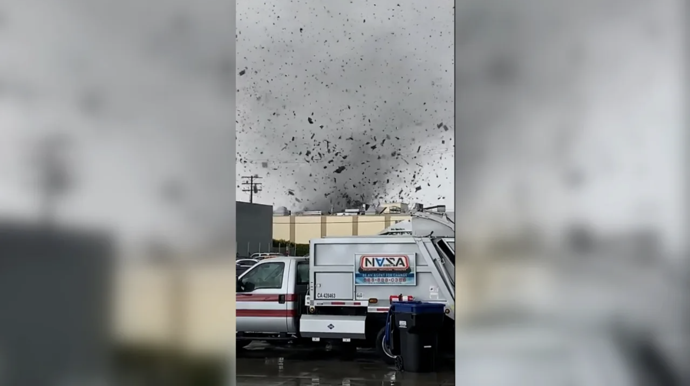

At least one person was injured after a rare tornado hit a city just southeast of Los Angeles Wednesday, local officials said.
The National Weather Service confirmed the tornado “briefly touched down” in an industrial park and warehouse district in the city of Montebello and rated the tornado an EF-1 with estimated peak winds of 110 mph – the strongest tornado to hit the Los Angeles area since 1983.
The “intense microcell” damaged at least 17 buildings, 11 so severely the fire department deemed them too dangerous to use, according to Michael Chee, a city public information officer.